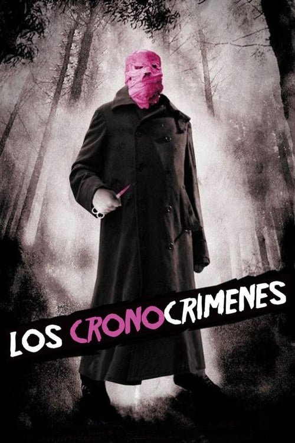

Los cronocrímenes (2007)

Plataforma: Star+
Puntuación IMDb: 7.4/10
Duración: 1h 39m
Género: Thriller, Misterio
Sinopsis Rápida
Un hombre viaja accidentalmente al pasado, cambiando el curso de su vida y generando una paradoja temporal que lo persigue implacablemente. ¿Podrá resolver el enigma antes de que sea demasiado tarde?
Sinopsis Detallada
Los Cronocrímenes sigue a Héctor, un hombre que, tras un incidente inesperado, viaja al pasado y se encuentra con su yo anterior, creando una compleja paradoja temporal. La película se caracteriza por su intriga, su trama compleja y sus giros argumentales inesperados. Con una atmósfera de suspenso y misterio, Los Cronocrímenes es una película que exige atención y análisis.
¿Por qué tenés que verla?
- Una trama ingeniosa y llena de giros sorprendentes.
- Su atmósfera tensa y claustrofóbica que mantiene en vilo al espectador.
- Una película que juega con las paradojas temporales de forma inteligente.
- Un final que cierra el círculo de la trama.
Idea Extra
Explicación detallada de las paradojas temporales que se presentan en la película.